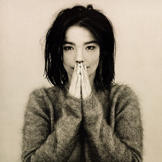
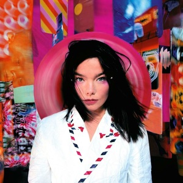
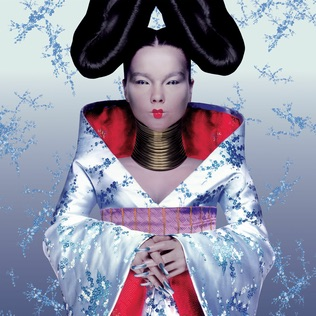
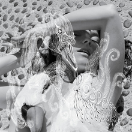
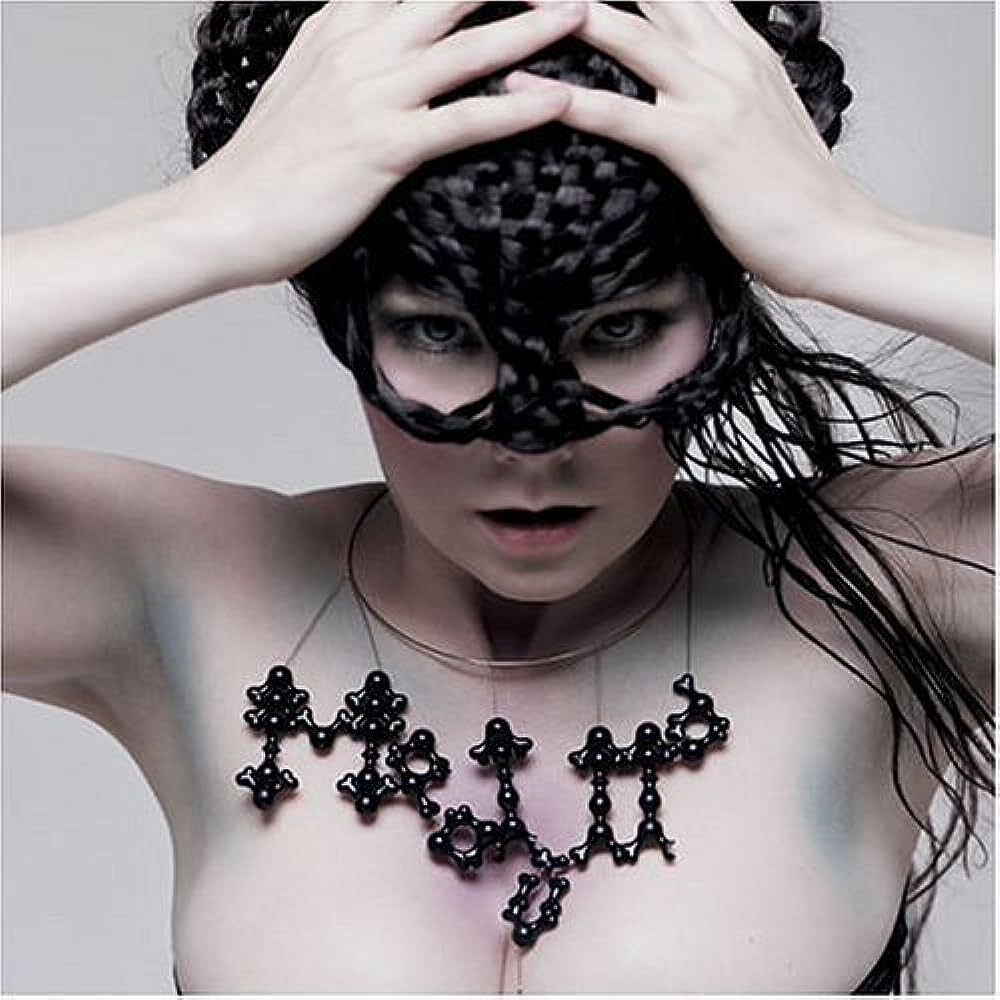
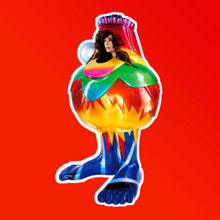
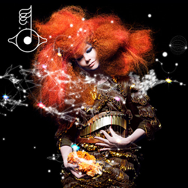
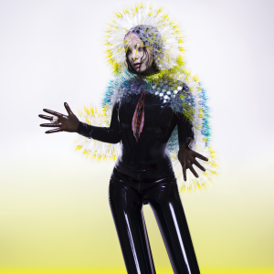
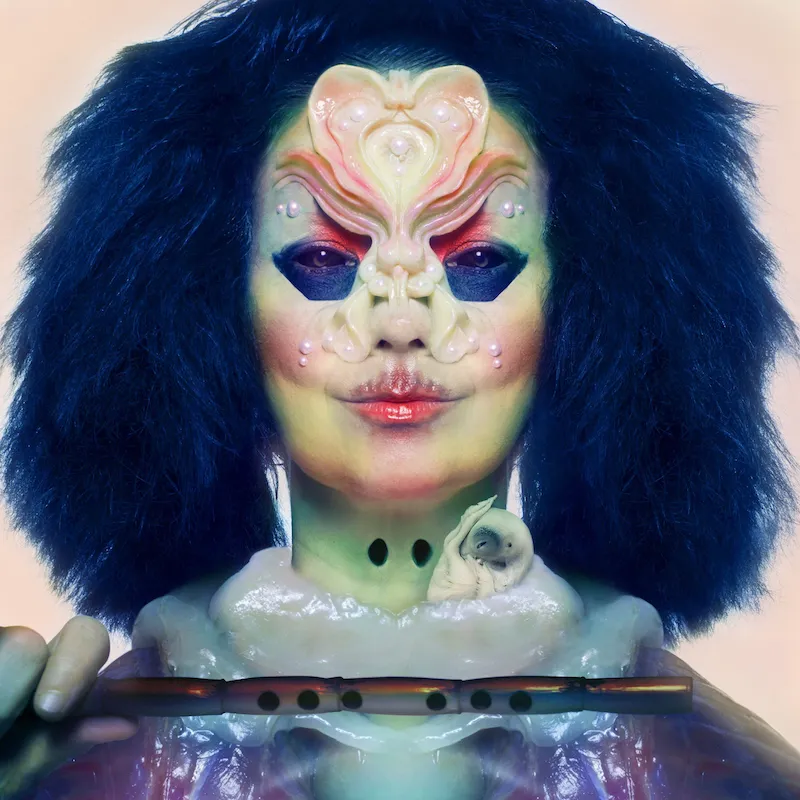
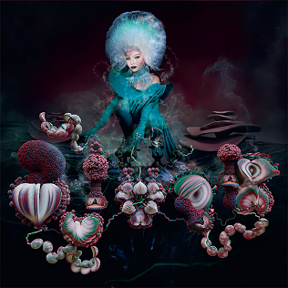

With her 40+ year career, Björk has crafted her discography to fit her style at the time being. Her time line is as follows: Debut (1993), Post (1995), Homogenic (1997), Vespertine (2001), Medúlla (2004), Volta (2007), Biophilia (2011), Vulnicura (2015), Utopia (2017) and Fossora (2022). 31 of her singles have reached the top 40 on the pop charts around the world. Aside from her own personal discography, she has also helped other artists write some of their music. For example, in 1992 she was asked to write a song for Madonna, which later resulted in Madonna's single “Bedtime Story.” Aside for creating for other artists, Björk has worked with other artists in her music. In recent years Arca has helped co-produce the last two of her albums, a Venezuelan musician and record producer.
In the same manner, she has been a positive female role model for many with her concern with the issues of social injustice. After the tsunami hit Southeast Asia in 2004, her work on “Army of Mixes” commenced to raise relief funds to those affected. Fans and musicians around the world responded and her and her co-writer picked the top 20 to appear on the album and it raised over $250,000 to help UNICEF’s work in the region.









